In the colorful and warm tropical waters of the Great Barrier Reef, a Clown Fish named Marlin lives safe and secluded in his anemone home with his only son, Nemo. Fearful of the ocean and its unpredictable risks, he struggles to protect his son. Nemo, like all young fish, is eager to explore the mysterious reef. When Nemo is unexpectedly taken far from home and thrust into a tacky dentist’s office fish tank, Marlin finds himself the unlikely hero on an epic journey to rescue his son.
Sheltered deep within The Great Barrier reef, safe inside his anemone home, lives Marlin. After losing his wife and family to the ocean, Marlin is left alone to raise his only surviving child, Nemo. He vows never to let anything happen to his son. A loving and responsible father, Marlin keeps his noble promise throughout Nemo’s early years.
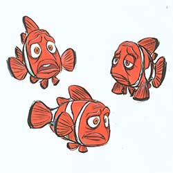
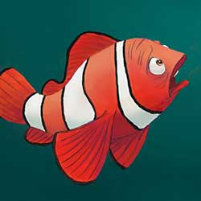


Nemo is a curious and impressionable six-year-old, only child who lives with his overprotective, single-parent father, Marlin. Having led a sheltered life, Nemo brims with the excitement of starting school and finally seeing the wonders of the Great Barrier Reef. Despite being born with a withered fin, Nemo yearns for adventure, and as fate takes him far from home, he learns he is capable of doing great things.
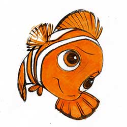

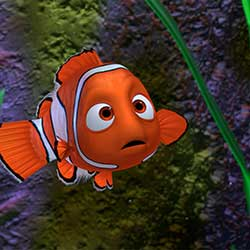
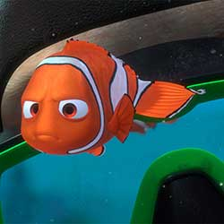
Throughout the vast ocean you will not find a fish more hospitable, more friendly, or more sociable than Dory. She would love to chat with you all day and tell you her life story, but she can’t. Dory suffers from short term memory loss. Dory is the aquatic Good Samaritan who offers to help Marlin on his journey to find his son. She is certainly an odd partner.


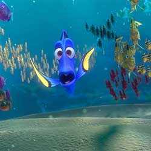
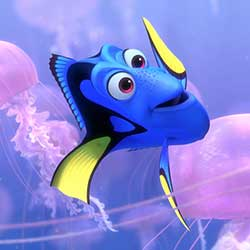
Gill is the maverick of the dentist’s office fish tank. He is the leader of an eclectic gang of fish, who hang on his every word and are drawn to his magnetic personality. This tough, scarred, one-finned fish was raised in the ocean, but taken at a young age to live in a tank. Surrounded by fish who have spent their entire lives in “the box,” Gill alone feels the pull to be free. Though he dreams of one day breaking out and returning to the ocean.
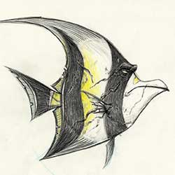

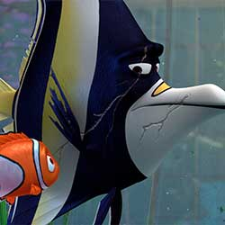

No matter where you're from—the ocean, eBay, Pet Palace, or mail order—being stuck in a kitschy dentist's aquarium can do things to a fish. Led by escape artist Gill, Peach, Bloat, Gurgle, Deb, Bubbles, and Jacques make life livable with tiki-inspired tank rituals, all the while dreaming of getting back into the Big Blue.


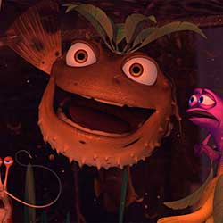
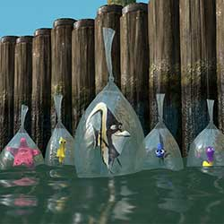
Bruce, Anchor and Chum are mates. Anchor is cynical; he hates dolphins. Chum is hyperactive; he can’t keep still. Bruce is the jolly leader of the pack. All three are members of a Fish-Eaters Anonymous Group, and are tormented by their natural urge to eat fish and their resulting unpopularity amongst the general ocean population.


Crush and his offspring Squirt know how to chill and go with the flow, especially the one created by the East Australian Current. The two have a righteous bond that's totally sweet. After 150 years of living in the ocean, Crush knows a thing or two about being a good parent.
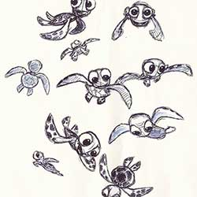
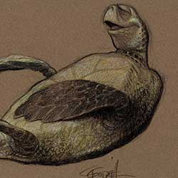


Intended to amuse children visiting the dentist’s office, the fish tank in Finding Nemo can also be viewed as a glass prison for its unlucky inhabitants. Looking to illustrate the odd dichotomy, the filmmakers found inspiration in the world of kitsch aquarium accessories and began filling the tank with garish plastic objects. When we meet them, we find the tank gang has gone slightly mad, prisoners not only of their narrow confines but also the dentist’s bad taste.
It’s not often that an ocean current plays a role in a movie, but the real-life East Australian Current (EAC) had compelling qualities. A colorful underwater highway favored by migrating fish and sea turtles, the EAC follows a path of hundreds of miles before reaching Sydney Harbor, providing a handy template for both the Pixar art and story teams.
The epic journey required Marlin to leave the relative safety of his home on the coral reef for the depths of the great unknown, which the filmmakers viewed as both a metaphor and the very real drop-off of a deep-ocean trench.“The ocean is so beautiful and there’s so much to explore, but if you’re a fish, every foot you go there is something that could eat you," observed producer Graham Walters.“Ultimately it comes down to anything could be out there. It’s both wondrous and terrifying.”
Humans enter the picture as Marlin and Dory reach Sydney Harbor, bustling with trawling fishermen, a sewage treatment plant, views of iconic Sydney landmarks, and most importantly, buildings perched next to the water. For both scenic and technical reasons, the filmmakers needed their land-based scenes as close to the ocean as possible, and a dentist’s office in the charming seaside community of North Sydney provided the perfect location for Nemo’s final rescue.
How do you construct a set out of thousands of gelatinous, translucent animals? “We spent a lot of time with Ralph’s (Eggelston) pastels, watched a lot of underwater footage taken in Palau in the South Pacific, and also went to visit the jellyfish exhibit at the Monterey Bay Aquarium to better understand what jellyfish look like and how they really move,” explains Supervising Technical Director Oren Jacob.“In the end this is one of the most beautiful scenes in the movie, and one of the scariest, too.”
With Nemo’s home set in Australia’s Great Barrier Reef, the Pixar team had one of the most colorful environments on Earth to work with. The unlikely challenge was how much to change its otherworldly beauty. Early R&D tests were startling. “It looked so real!” recalls John Lasseter. “From that first CG coral reef test we realized we had to go further with stylization than we’d ever gone before. Of course we have talking fish, but we really needed the audience to know that this world, while believable, was also make-believe.”
"Inside the whale it’s dark, and in a dark environment, the lighting requires extreme precision. There’s no obvious light source, so we had to create something. Whales have a baleen—a thick, broom-like substance around their lips—so we have the light seeping through there," explains Director of Photography for Lighting Sharon Calahan.
The filmmakers wanted a chase scene involving Dory, Marlin, and great white shark Bruce. Many scenarios were being considered when a team field trip to a submarine docked at a San Francisco pier revealed that submarine floors are actually grates. With that simple fact in mind, the Pixar team envisioned a wild escape sequence set in the wreck of an old World War II era submarine sunk in the Great Barrier Reef.
A colorscript is a sequence of small pastel drawings or paintings used to emphasize color in each scene and establish a film's visual language. For Finding Nemo, Production Designer Ralph Eggleston started with the vibrant palette of the underwater reef, among the most naturally colorful environments on Earth, then shifted to an increasingly minimalist and ominous palette as Marlin and Dory descend into the murky depths of the ocean on an increasingly perilous journey.
DIRECTED BY ANDREW STANTON
CO-DIRECTED BY LEE UNKRICH
PRODUCED BY GRAHAM WALTERS
EXECUTIVE PRODUCER JOHN LASSETER
ASSOCIATE PRODUCER JINKO GOTOH
ORIGINAL STORY BY ANDREW STANTON
SCREENPLAY BY ANDREW STANTON, BOB PETERSON, DAVID REYNOLDS
MUSIC BY THOMAS NEWMAN
STORY SUPERVISOR RONNIE DEL CARMEN, DAN JEUP, JASON KATZ
FILM EDITOR DAVID IAN SALTER
SUPERVISING TECHNICAL DIRECTOR OREN JACOB
PRODUCTION DESIGNERS RALPH EGGLESTON
DIRECTORS OF PHOTOGRAPHY SHARON CALAHAN, JEREMY LASKY
SUPERVISING ANIMATOR DYLAN BROWN
CHARACTER ART DIRECTOR RICKY VEGA NIERVA
SHADING ART DIRECTOR ROBIN COOPER
ENVIRONMENT ART DIRECTOR ANTHONY CHRISTOV, RANDY BERRETT
CHARACTERS CG SUPERVISOR BRIAN GREEN
OCEAN UNIT CG SUPERVISORS LISA FORSSELL, DANIELLE FEINBERG
REEF UNIT CG SUPERVISOR DAVID EISENMANN
TANK UNIT CG SUPERVISOR JESSE HOLLANDER
SHARKS/SYDNEY UNIT CG SUPERVISOR STEVE MAY
GLOBAL TECHNOLOGY CG SUPERVISOR MICHAEL FONG
DIGITAL FINAL CG SUPERVISOR ANTHONY APODACA
SCHOOLING/FLOCKING CG SUPERVISOR MICHAEL LORENZEN
PRODUCTION MANAGER LINDSEY COLLINS
SOUND DESIGN GARY RYDSTROM
CASTING MARY HIDALGO, KEVIN REHER, MATTHEW JON BECK
MARLIN ALBERT BROOKS
DORY ELLEN DEGENERES
GILL WILLEM DAFOE
BLOAT BRAD GARRETT
PEACH ALLISON JANNEY
GURGLE AUSTIN PENDLETON
DEB (& FLO) VICKI LEWIS
JACQUES JOE RANFT
NIGEL GEOFFREY RUSH
CRUSH ANDREW STANTON
SQUIRT NICHOLAS BIRD
BRUCE BARRY HUMPHRIES